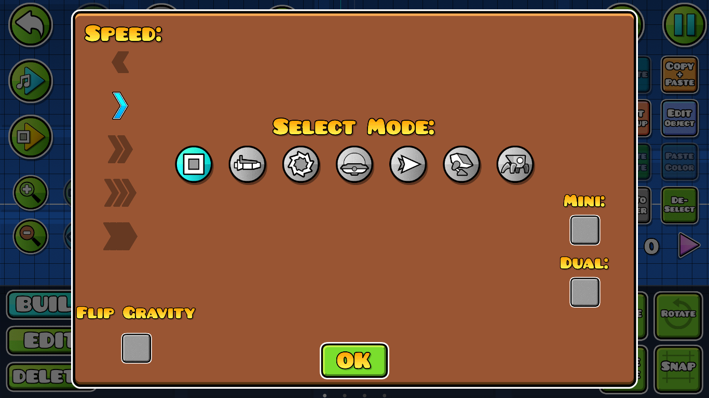

StartPos: Estre trigger sirve como un checkpoint o un punto de comienzo, donde tendremos que configurar el como este trigger hará que el jugador comience apareciendo justo en la posición que coloquemos este trigger dentro del editor, además de que tendremos que configurar también la velocidad, el vehículo, la gravedad, dual, etc.
Este trigger hace que el jugador "spawne" en cualquier parte del nivel, por lo que hay que tener cuidado de dónde se coloca y las propiedades que coloquemos.

Sin importar que salgas del nivel y cierres el juego, la posición de el StartPos se guardará hasta que lo quites a mano, además cabe aclarar que no puedes verificar o pasar un nivel "legalmente" con este trigger en un nivel.
Sin importar cuantos StartPos coloques en el nivel, solo funcionará el que esté más cerca del final del nivel (Aunque con un programa externo esta propiedad puede cambiar).
Tutorial recomendado: